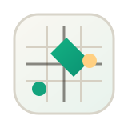
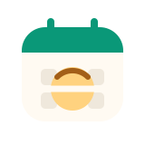
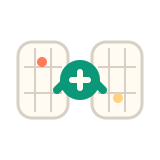
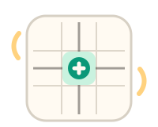
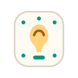
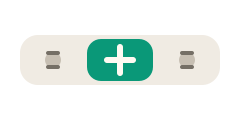
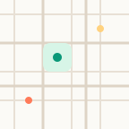
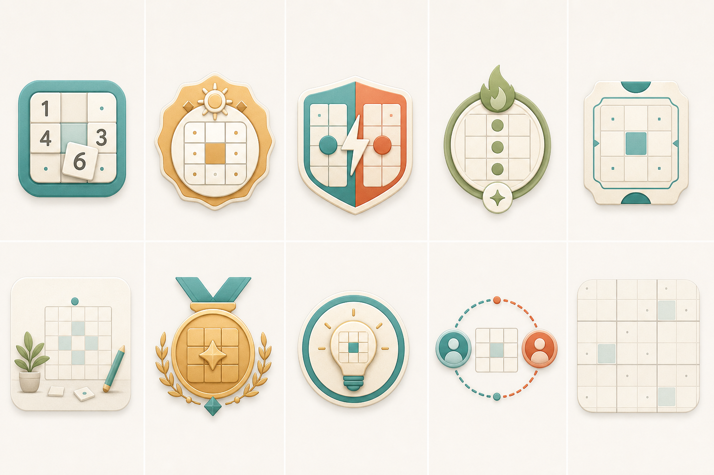

Dokuel Mark
Compact app mark or splash icon using the board as the brand signal.
Ten small, vector-friendly candidates shaped around the current game UI.

Compact app mark or splash icon using the board as the brand signal.

Calendar tile for the landing row, daily streak surfaces, or share cards.

Multiplayer identity for create-room, invite, and victory states.
Warm reward token for daily completion and returning-player moments.

Invite-card motif for lobby headers, copy states, or empty waiting rows.

Quiet illustration for no saved games, no stats, or first-run guidance.
More on-brand replacement candidate for the win modal celebration emoji.

Hint affordance for button states, tutorial overlays, or assist-level copy.

Multiplayer progress motif that can scale from icon to banner treatment.

Segmented-control asset aligned with the Paper, Standard, Full picker.

Repeatable background tile for share images, empty states, or subtle panels.
The bitmap concept sheet that informed the vector candidates.
